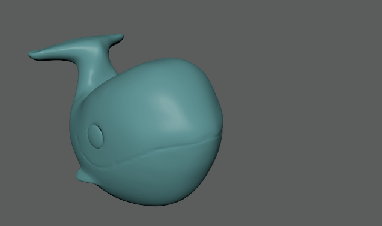
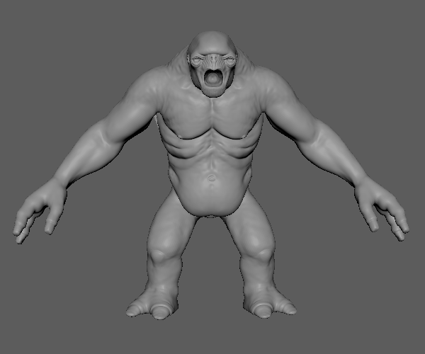
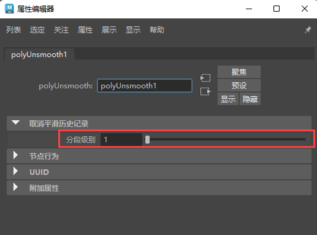

通过选择“网格 > 取消平滑”(Mesh > Unsmooth)，可以取消细分任何已平滑的高分辨率 Catmull-Clark 网格。可以在取消平滑选项(Unsmooth Options)或 polySmooth 节点中设置要重新创建的细分级别数。取消平滑可用于创建在雕刻过程中已平滑和细分的网格的低分辨率版本。
重要： 对具有多个包含不同分割级别和/或三角形的壳的网格进行取消平滑可能会导致意外结果。
解决方法：将网格分离为单独的壳，然后分别对每个片运行“取消平滑”(Unsmooth)。
取消平滑网格
- 选择网格。
- 选择“网格 > 取消平滑”(Mesh > Unsmooth) >
 ，然后设置以下选项：
，然后设置以下选项：
- 保持原始(Keep original)：启用时，在执行“取消平滑”(Unsmooth)操作后将保留原始对象。
- 分段级别(Division levels)：用于选择要移除的细分级别数。例如，级别 1 将移除一个细分级别。
在以下示例中，“分段级别”(Division levels)设定为 1，并且“保持原始”(Keep original)处于启用状态。
调整已取消平滑网格的分段级别
- 执行取消平滑操作后，可以执行以下操作之一来调整分段级别：
- 使用在完成取消平滑操作后显示的视图中编辑器：

模型提供者：Christoph Schädl
- 使用 polyUnsmooth 节点中的“分段级别”(Division Levels)滑块：

- 使用在完成取消平滑操作后显示的视图中编辑器：